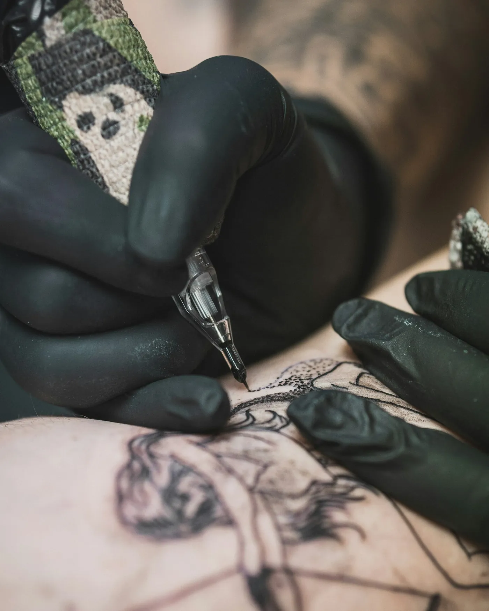
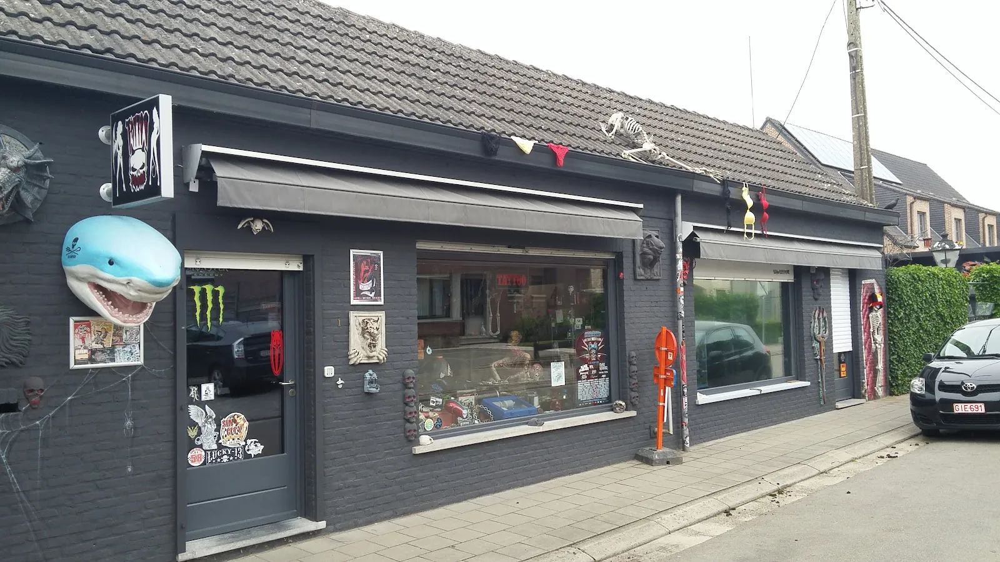
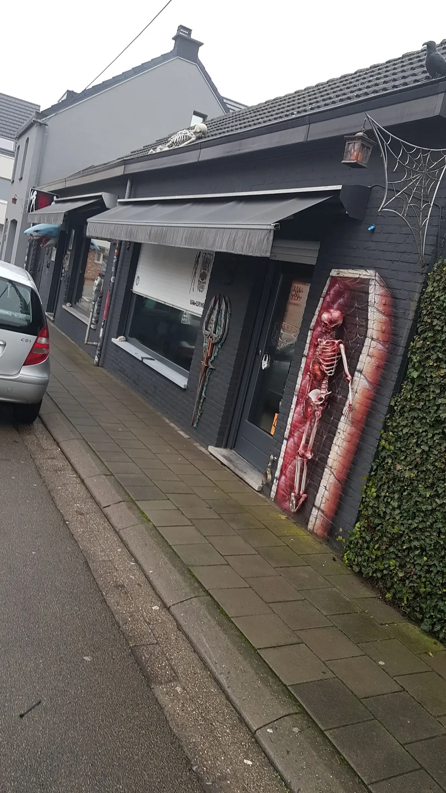
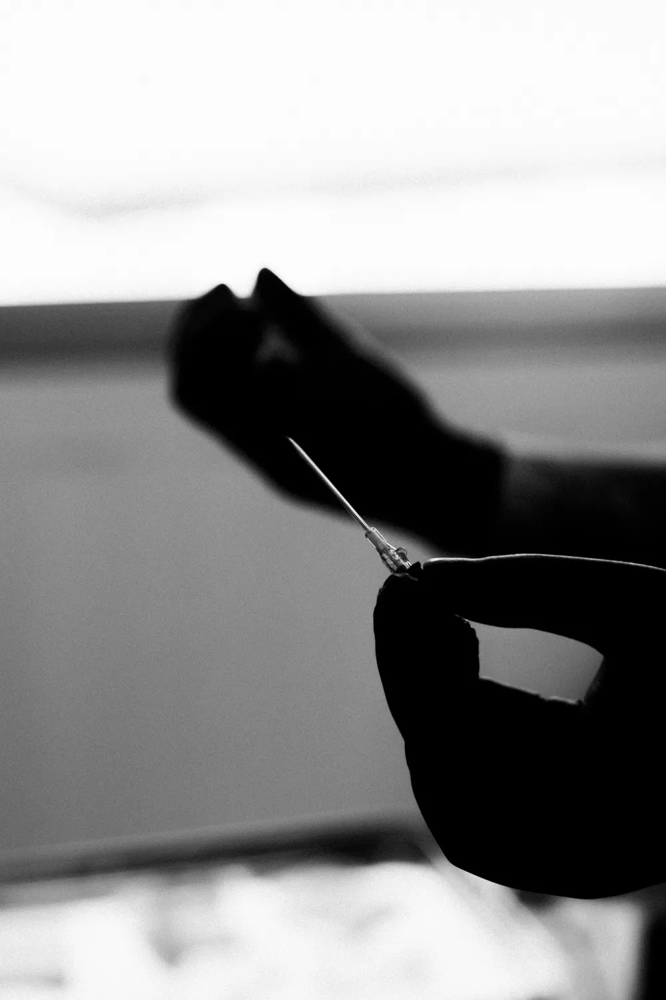
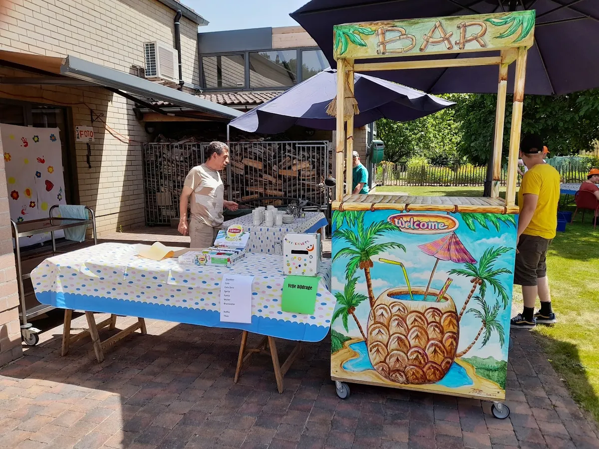
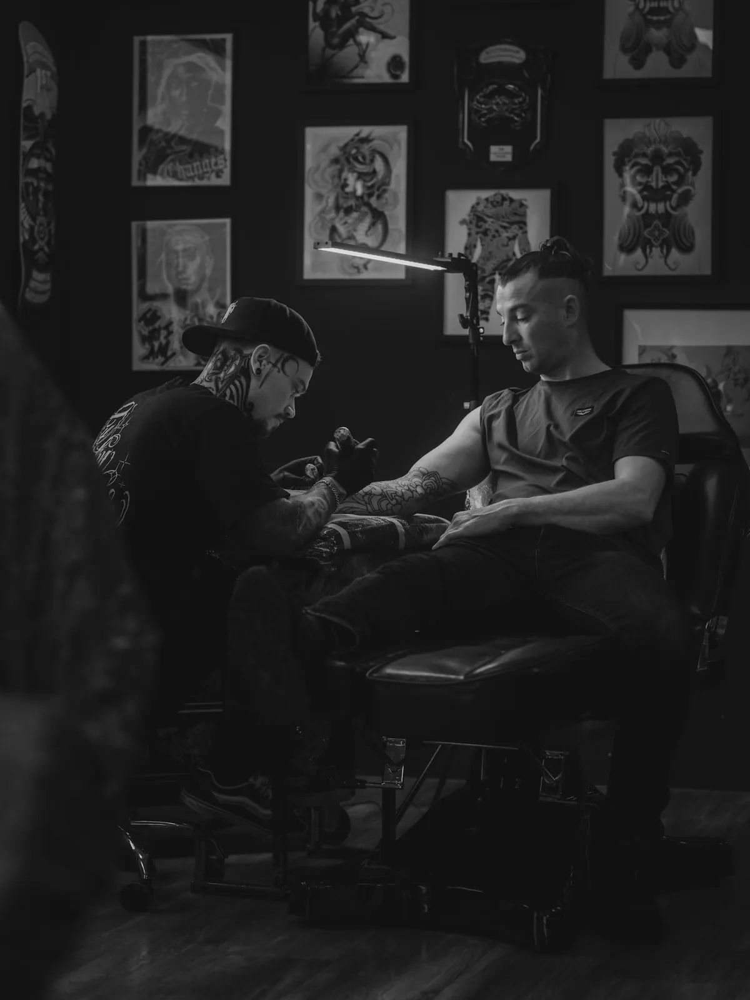
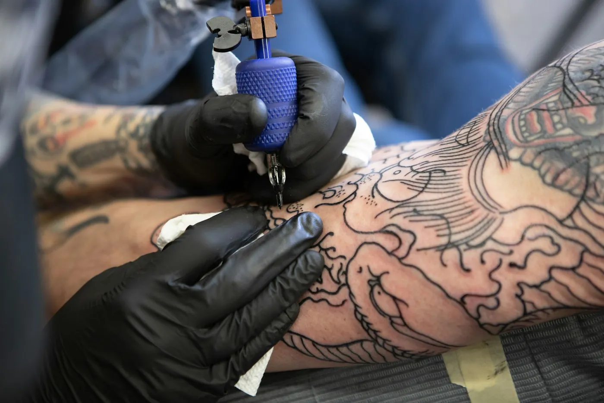
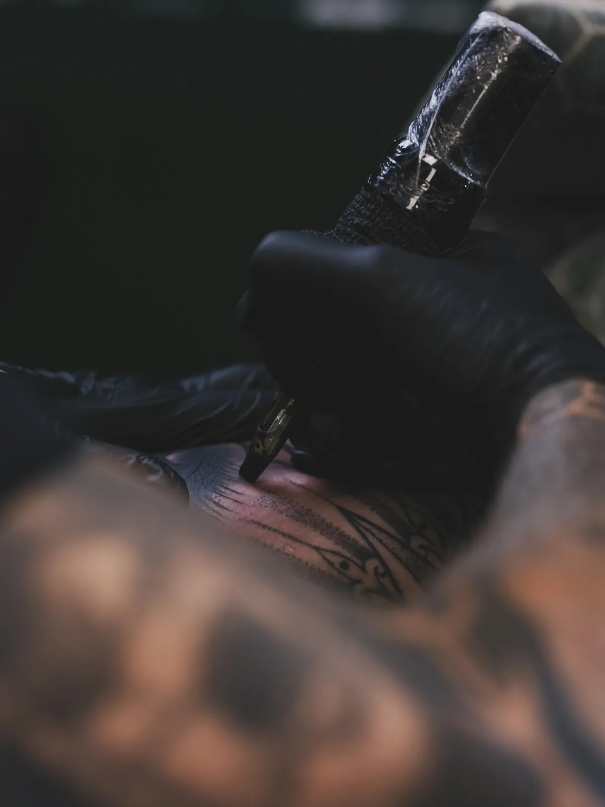

Van klein tot een hele armTattoos
Je eerste kleine tattoo of een groot stuk waar je al jaren over nadenkt. Samen bepalen jullie de plek, de grootte en of het in zwart of in kleur komt.
- Fijn lijnwerk
- Zwart en grijs
- Kleur
- Namen en data
Achter de haai en de skeletten zit Perre. Kom binnen met je idee, een foto of gewoon een vraag. Hij bijt niet, beloofd.

De shop aan de Schaafweg
Ja, die kist hoort erbijEen naam, een datum, een dier of een stuk dat je hele arm vult. Breng mee wat je in je hoofd hebt. Perre zegt eerlijk wat kan en wat mooi blijft op je huid.

Van klein tot een hele armJe eerste kleine tattoo of een groot stuk waar je al jaren over nadenkt. Samen bepalen jullie de plek, de grootte en of het in zwart of in kleur komt.

Die zet Perre niet zelf. Daarvoor komt er geregeld een piercer langs in de shop. Bel even om te horen wanneer de volgende keer is.
Een babbel kost niets. Je hoeft niet meteen te beslissen.
Na je werkDan is de shop nog open.

Wie door de Schaafweg rijdt, kent de shop. Een haaienkop boven de deur, skeletten op het dak, een kist naast het raam. Dat schrikt sommige mensen wat af, en dat mag. Het is een tattooshop.
Wie binnenstapt, merkt snel hoe het echt zit. Perre neemt de tijd, luistert naar wat je wil en maakt er gewoon een babbel van.
Perre is in Branst geen onbekende. Hij knutselde een zomerbar in elkaar voor De Steiger, beschilderde papiercontainers op vraag van de buren en hielp mee aan de versiering van het kerkplein.
“ik heb sterk de indruk dat DE PERRE met deze mensen begaan is.”Linda Rottiers, vrijwilliger in De Steiger
GEEN SCHRIK hebben voor winkel uitzicht hij bijt niet en is heel vriendelijk
Geen haast en geen verrassingen. Zo verloopt het meestal, van je eerste telefoontje tot je naar huis gaat met iets nieuws op je huid.

Vertel wat je wil laten zetten. Een foto of schets erbij helpt al veel.

Waar komt hij, hoe groot, zwart of kleur? Perre denkt mee en zegt het als iets beter anders kan.

Overdag, of op donderdag en vrijdag na je werk. Je ziet het ontwerp eerst op je huid.
Je krijgt uitleg mee over de verzorging. Vraag achteraf? Bel of stuur een berichtje.
Volg de haai. Bel gerust op voorhand, zeker als je voor een piercing komt.
Ik maakte deze demo voor jullie om te tonen wat er kan. Na een kort gesprek maak ik er iets veel persoonlijkers van, helemaal naar jullie wens.
Vrijblijvend. Ik kom langs of we bellen.
Op maat, op jullie eigen domein.
Geen voorschot. Jullie betalen pas als alles klaar is.
Hosting, domeinnaam en kleine wijzigingen, zoals nieuwe openingsuren.
Omdat een voorbeeld meer zegt dan een mail. Zo zien jullie meteen wat er kan, en het kost jullie niets.
Nee. Het gesprek is vrijblijvend. Vinden jullie het niks, dan is het daarmee gedaan.
Na ons gesprek staat jullie site binnen 10 tot 14 dagen online.
Zeker. Jullie domeinnaam kan gewoon blijven, de nieuwe site komt in de plaats van de oude.
Nee, dat doe ik op basis van ons gesprek. Eigen foto's zijn mooi meegenomen, maar niet nodig om te starten.